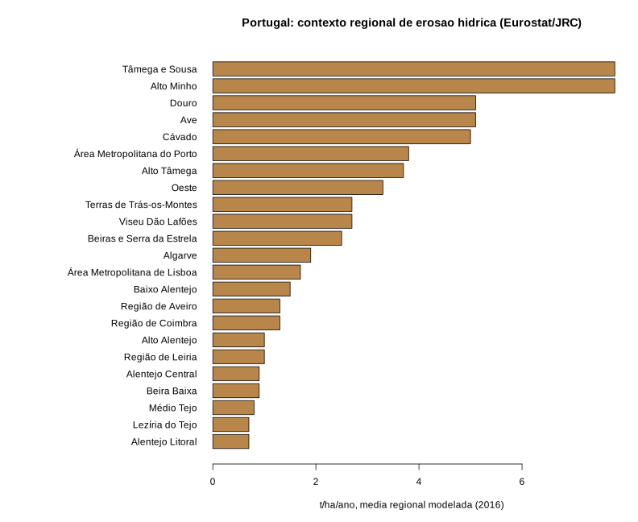

Revisão metodológica de 25 de outubro de 2026. Estado de cada módulo: disponível e em falta.
A aplicação organiza cinco módulos — Floods, Seismic, Landslides, Extreme Weather e Roads & Incidents — e preserva a distinção entre observações, avisos oficiais, cartografia de longo prazo e resultados experimentais. Roads reúne o serviço de trânsito e a consulta dos hazards na rede viária. A cartografia de contexto não comprova a existência de danos, pessoas atingidas ou cortes.
| Produto | Fonte e utilização | Escala e limites |
|---|---|---|
| Sismos observados | IPMA e EMSC no portal; EMSC no mapa público, com agência e data preservadas. | Observações dos últimos sete dias na área alargada Portugal/Atlântico/Ibéria; podem existir descrições do mesmo evento por diferentes agências. |
| Perigosidade sísmica | EFEHR ESHM20, mapa1846, PGA e probabilidade anual0,002103, aproximadamente10% em50anos; CC BY4.0, doi:10.12686/a15. | Modelo de longo prazo e condição de solo definida na fonte. Não é uma previsão do próximo sismo ou mapa atual de danos. |
| Suscetibilidade a movimentos de vertente | NASA GSFC/Stanley e Kirschbaum2017, uso livre com atribuição, doi:10.1007/s11069-017-2757-y. | Células de cerca1km, classes1–5, continente/Açores/Madeira. Recorte aproximado Natural Earth, domínio público; não substitui CAOP ou estudo geotécnico. |
| Erosão hídrica regional | Eurostat aei_pr_soiler/JRC RUSLE; referência2016, última disponível para a seleção utilizada. Geometrias GISCO NUTS2021,1:3milhões, utilização não comercial. | Média modelada de perda de solo em t/ha/ano.23regiões com valor,2sem dados. Não é medição por parcela ou previsão de instabilidade. ©EuroGeographics para os limites administrativos. |
| Avisos meteorológicos | IPMA: neve, calor, frio, vento e precipitação; cores, área nominal e validade preservadas. | O ponto de referência oficial identifica a área. Não se inventa um polígono de perigo nem se atribui impacto à coordenada do ponto. |
| Ocorrências e trânsito | ©SIFOR/ANEPC, consulta experimental não comercial e atribuição; Waze e IP em visualizadores originais, Google Maps por ligação. | Dados Waze/Google não são extraídos. O iframe não aceita as camadas IGNISPYRO; trânsito em direto e hazards nas vias são modos alternativos. |
As ocorrências pontuais são atualizadas na aplicação a cada cinco minutos enquanto a página estiver visível. Uma recolha recente não torna recente a publicação da origem. Para SIFOR, a triagem exige recolha e DataDosDados dentro de uma hora e um estado elegível. Dados antigos ou desconhecidos aparecem em cinzento e não geram condicionamentos automáticos. Avisos IPMA exigem validade temporal; sismos mantêm a data da observação. Falhas, cobertura incompleta e ausência de dados não são convertidas em segurança.
A vista Hazards nas vias usa a geometria cartográfica OpenFreeMap/OpenMapTiles/OpenStreetMap, ODbL. A consulta por iniciativa do utilizador é limitada à área visível e mantém cache em memória. O serviço de trânsito em direto continua disponível na vista Waze/IP. A integração de velocidades Google com as camadas próprias permanece sem fonte/API licenciada configurada; não foram ativadas APIs pagas.
Para cada segmento, calcula-se a distância plana local aproximada ao ponto das ocorrências atuais elegíveis. Até500m, o segmento é apresentado a laranja tracejado como possível condicionamento por proximidade. Este critério exploratório não considera perímetros de incêndio, profundidade, taludes, barreiras ou propagação. Não é limiar de segurança nem confirmação de corte. Linhas azuis representam geometria, com estado de circulação desconhecido. Sismos, avisos distritais e suscetibilidade estática são contexto, sem transformar todos os troços abrangidos em cortes.
O motor Landslides existente calcula na nuvem a alteração da probabilidade de solo exposto Dynamic World e o declive Copernicus DEM, com contexto de precipitação CHIRPS. A execução40179685497,25/10/2026 às09:12UTC, cobre aproximadamente0,95km², tem100% de cobertura analítica e área candidata0m². Estes resultados não demonstram ausência de perigo. Na comparação, CHIRPS disponibilizou80dos90dias esperados: o total integral permanece nulo.
O produto é experimental, não é probabilidade de deslizamento nem taxa de erosão RUSLE. O NAS recebe os resultados derivados por um coletor já existente. A integração autenticada lê apenas a pasta de resultados e verifica proveniência e hash do PNG; não recebe credenciais GEE ou acesso à base de dados. O mapa público conserva um snapshot datado.
O código research/cross_postfire.py cruza polígonos documentados de severidade alta de incêndio com as classes NASA alta/muito alta e a erosão regional. Exige produto de severidade, fonte HTTPS, data, índice dNBR/RdNBR/RBR e método de classificação. Alteração de solo exposto não é aceite como severidade de incêndio. Sem camada validada de severidade, o cruzamento real continua pendente e não se apresenta uma mancha inventada.
O relatório R acompanha atualidade das fontes, o arquivo histórico de Lisboa e a distribuição regional da erosão modelada. O arquivo de Lisboa permanece histórico, separado de cortes atuais. Os testes verificam proximidade, exclusão de eventos antigos, produtos estáticos, permissões, validade, coordenadas e integridade dos resultados GEE. Casos sintéticos de teste não são publicados como incidentes reais.

A figura representa médias regionais de contexto, não uma matriz operacional de risco. Não foram calculadas população atingida, segurança de itinerários ou extensão de cheias atuais a partir destes produtos.
Matriz de capacidades e fontes primárias · Relatório R · Código, dados derivados e automatização. O código do mapa é compilado com node build-map.mjs e node build-integrated.mjs; a análise usa R base. Os dados nacionais de contexto preservam fontes, resolução, ano e condições de reutilização em metadata.